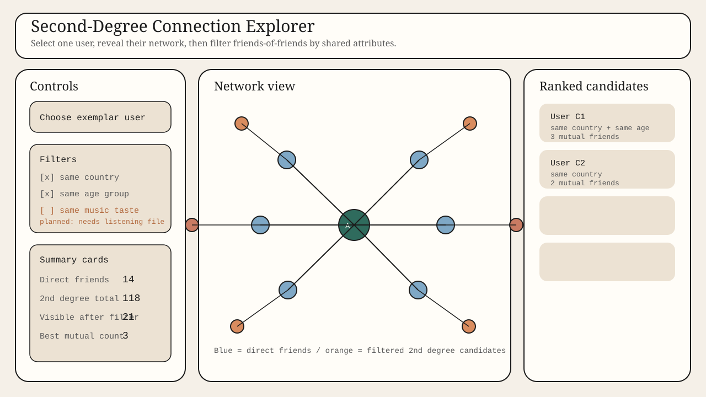
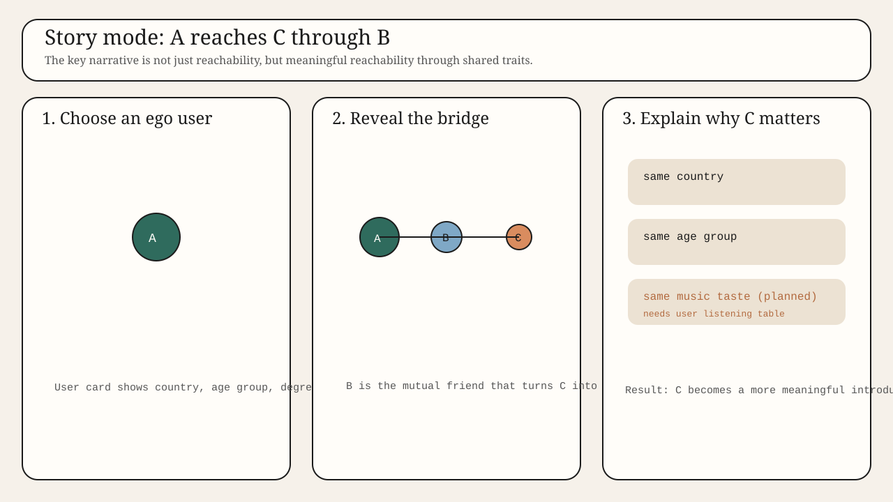

The goal of the final product is to show the hidden value of second-degree connections: not just who a user already knows, but which new people become reachable through one mutual friend and what makes those possible introductions meaningful.
The interface should let someone pick a user, reveal their direct friends, then reveal friends-of-friends and rank them by meaningful overlap. The overlap currently implemented from the local dataset is shared country and shared age group. Music taste remains part of the intended final narrative, but only once a user-level listening table is added.
This framing keeps the graph as the story rather than background data. The visual output is not a recommendation list, and not a generic social graph. It is a concrete answer to a social question: who is one meaningful mutual-friend step away from me?
The experience should unfold in layers. First the user sees the selected person and their direct connections. Then the second-degree layer appears. Then filters narrow that layer into a manageable subset that shares one or more attributes. This keeps the story readable while preserving the sense that the reachable social space expands dramatically after one hop.
The corrected milestone makes one important distinction very explicit: the local files support second-degree matching through age group and country right now, but they do not support direct user-level music-taste matching because no user-to-artist listening file is present in the local workspace.
Instead of hiding that limitation, the prototype treats it as roadmap information. The music filter is part of the product plan, but not falsely implemented with invented data.

Sketch A: a direct interaction view with ego user, first-degree ring, second-degree ring, attribute filters, and a ranked match panel.

Sketch B: a storytelling version that makes the A-B-C relationship explicit, then explains why candidate C matters through shared traits and mutual-friend strength.
The current prototype already implements the structural layer, age-group filter, and country filter. Music taste is documented as the next feature once the missing listening-history file is added.
| Visualization | Tools | Lecture support needed |
|---|---|---|
| Ego network with first and second degree rings | Python preprocessing, JavaScript SVG rendering, graph utilities | Past: graph data basics, visual encoding, layout. Future: force layouts and network readability. |
| Attribute filters for age group and country | JavaScript UI state, checkbox filters, ranked candidate list | Past: interaction design and coordinated views. Future: more advanced filtering logic and usability. |
| Ranked second-degree candidate panel | Python ranking logic, JavaScript table rendering | Past: sorting, overview-plus-detail patterns. Future: storytelling annotations and explanation layers. |
| Supporting analysis views for degree and second-degree distributions | Python preprocessing, SVG bar charts, notebook-based EDA | Past: histograms, distributions, preprocessing. Future: performance tuning and linked interaction. |
| Planned music-taste matching | User listening table plus ArtistTags/ArtistsMap enrichment | Future: data integration, multi-table joins, richer recommendation-style feature engineering. |
The current prototype is already running as a real second-degree explorer. It includes a user selector, filter controls, a network view, summary cards, and a ranked list of second-degree candidates. The prototype is powered by real processed data, not mock values.
The prototype also exposes the product boundary honestly: age-group and country matching are live, while music-taste matching is visible as a planned extension rather than being faked.
Deliverables included in this milestone folder: printable brief, network-focused SVG sketches, processed analysis export, executed deep-analysis notebook, and the first functional website skeleton.